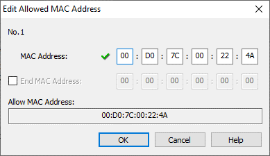
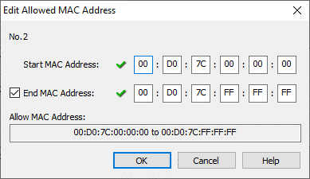

|
|
|
Topic: CL312 |
Allow List Add/Edit MAC Address |
|
|
A MAC address (media access control) is an exclusive number assigned to each hardware network device. The number is unique and 48 bits in length. MAC addresses are displayed as 6 octets using Hexadecimal. The characters used are: 0-9, and A-F. The letters can be in Lower case or Upper case.
There are two methods of adding a MAC Address to the list: Single MAC, Range of MAC:
Single MAC: Each individual device MAC can be specified.

Range of MAC: An inclusive range of MAC Addresses. The beginning and ending are specified arbitrarily.

Vendor MAC Prefix: Using the Range method can be particularly useful to easily include all devices of a specific Vendor. The first 3 octets represent the Vendor MAC Prefix. For Example, 00:D0:7C is used by all Koyo/JTEKT ELECTRONICS devices. The above configuration would allow all C-more and CLICK products to communicate with this PLC.
Finding your device MAC Address: